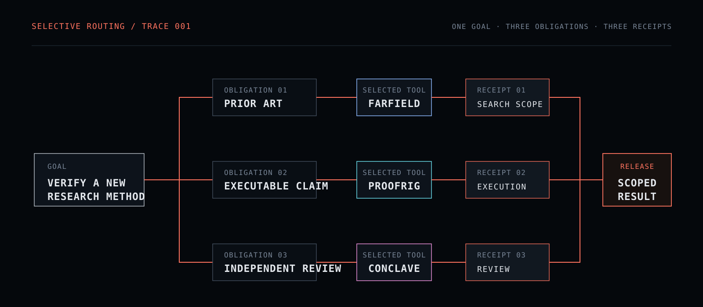

01 / MIND
Formal Reasoning
Turns claims into explicit objects, assumptions, negations, proof obligations, and counterexample searches.
Specification ↗
EVIDENCE-GOVERNED RESEARCH SOFTWARE
Route the claim, not the conversation.
One research goal becomes explicit obligations. Each load-bearing obligation is routed to the specialist method that can actually establish it. Every result returns with provenance, limits, and a scoped verdict.
The Gauntlet is not a panel of personalities. It is a control surface that turns a goal into claim-specific obligations, selectively invokes specialist routes, and preserves the evidence boundary through release.

Each simulation below uses the same visual substrate—nodes, edges, state transitions—but a different control law. That difference is the point.
Turns claims into explicit objects, assumptions, negations, proof obligations, and counterexample searches.
Specification ↗Expands a mechanism into primary-source searches, repository checks, standards, current facts, prior art, and reusable implementations.
Specification ↗Begins only after the nearest known approaches and a named constraint gap are explicit. Candidates are generated against that gap, not against novelty theater.
Specification ↗Converts executable software claims into runnable checks, real-entrypoint execution, regression obligations, and machine-readable receipts.
Specification ↗Tests whether the proposed mechanism improves the construct that matters under matched baselines, ablations, uncertainty, and stop/go rules.
Specification ↗Control modules have no independent factual authority. They frame, adapt, audit, preflight, or review the work performed by evidence-producing routes.
Frame → decompose → route → integrate → assure → release.
/soulSupply the smallest task-relevant complement missing from the current state.
/foilAudit framing, stale state, inherited premises, verification gaps, and false-green checks.
/gauntletSTILL → GROUND → ORIENT → WEIGH → RELEASE.
orchestrator-invokedSelective independent review with commit-reveal and a direct-analysis control.
/council/soul/foil/mind/space/reality/power/time/gauntlet/council
The software architecture is inspectable now. Behavioral efficacy remains a research question. Small internal pilots are not official leaderboard submissions and do not establish general efficacy.
Can an evidence-governed modular reasoning workflow improve traceability, verification discipline, and independent usefulness of AI-assisted research without confusing agreement, confidence, or passing software checks with scientific validity?
Freeze tasks and endpoints before execution; compare the routed workflow against a strong direct-analysis control under the same resource budget.
Remove or substitute routing, evidence receipts, and assurance components separately so gains cannot be assigned to the whole stack by default.
Measure task outcome, verification quality, cost, and failure retention together. A gain that increases unsupported certainty is not a success.

The public page distinguishes specification evidence, executable validation, pilot observations, and unresolved efficacy instead of collapsing them into one confidence score.
Public software/specification checks.
PASS-SPEC runtime contracts.
Includes a null result; retained rather than hidden.
Behavioral efficacy remains a research question.

The funding and research-facing path ends at source, validation, governance, and reproducibility artifacts rather than at a marketing claim.
python validation/validate_soul_gauntlet_public.pypython validation/validate_showcase.pypython -m compileall -q validationCurrent demonstrations include software checks and limited pilots. They are not official leaderboard submissions. A null result is reported where observed. These materials do not establish general efficacy.